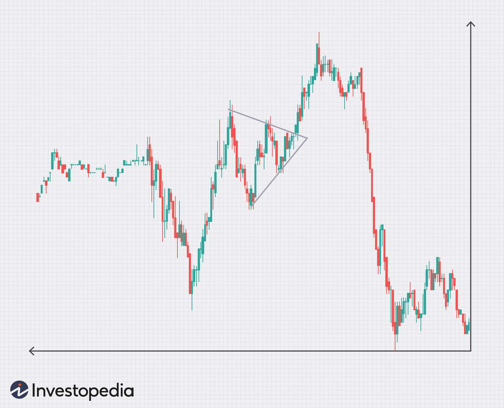

Role Playing Game
Simple Role Playing Game

Stock Predictor
Program that uses market trends and machine learning to predict stock prices for trading
AI Chat Bot
Program that simulates having a real human conversation using AI to understand and respond to the users queries.

Web Scraper
Program that automates the process of extracting data from webpages and converts it into a structured format such as using spreadsheets or a database.